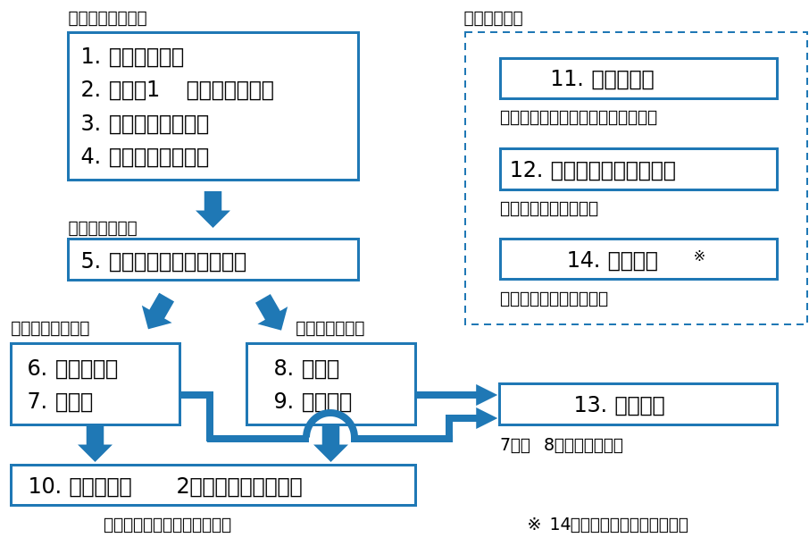

class: middle, center # 数理統計学特論II<br>第1回 基本用語 奥 牧人 (和漢研) 2022/??/?? --- # この科目について * この科目では大学院向けの統計学の本の内容を扱います。 * 参考書: 竹村彰通 著「現代数理統計学」 * 数理統計学特論Iで本の前半、IIで後半を扱います。 * 成績評価は毎回の小テストが70%、期末試験が30%です。 * 講義資料へのリンクと小テストはMoodleに掲載します。 --- # 「現代数理統計学」の全体像  --- # 授業計画 1. 基本用語 2. 検定論 3. 区間推定 4. 正規分布と二項分布に関する推測 5. 線形モデル 6. ノンパラメトリック法 7. 漸近理論 8. 期末試験と解説 --- # 予習と復習 * 予習 * 毎回授業の最後にキーワードを示すので、次回までに意味を<br>調べておいて下さい。 * 予習用キーワードはMoodleにも掲載します。 * 復習 * 各自で振り返りを行い、まとめておいて下さい。 --- # 今回の授業について * 今回は高校や大学の範囲の復習です。 * 大学1年生向けの教科書に出てくるキーワードを表示するので、<br>指名されたら簡単に意味を説明して下さい。 * 参考書: 東京大学教養学部統計学教室 編「統計学入門」 * 分からなければ「分かりません」と答えても構いません。 --- # 1. 統計学の基礎 * 量的データと質的データ * 全数調査と標本調査 * 復元抽出と非復元抽出 * 母集団と標本 * 正規分布 * 平均 * 分散 * 仮説検定 --- # 2. 1次元のデータ * ヒストグラム * 箱ひげ図 * 平均値と中央値 (メディアン) * 外れ値 * 四分位点 * 標準偏差 * 四分位範囲 * 変動係数 (CV, coefficient of variation) * 標準化 --- # 3. 2次元のデータ * 散布図 * 相関係数 * 分割表 (クロス集計表) * 擬似相関 * 偏相関係数 * スピアマンの順位相関係数 * 回帰直線 * 最小二乗法 * 決定係数 * 多項式回帰 --- # 4. 確率 * 標本空間 * 事象 * ベン図 * 和集合 * 積集合 * 補集合 * 排反 * 条件付確率 * 独立 * ベイズの定理 --- # 5. 確率変数 * 確率変数 * 確率分布 * 離散値と連続値 * 確率質量関数 * 確率密度関数 * 累積分布関数 * 期待値 * 分散と共分散 * 歪度 (skewness) * 尖度 (kurtosis) --- # 6. 確率分布 * 一様分布 * 二項分布 * ポアソン分布 * 幾何分布 * 超幾何分布 * 指数分布 * 正規分布 * 対数正規分布 * ガンマ分布 * ベータ分布 --- # 7. 多次元の確率分布 * 同時確率分布 * 周辺確率分布 * 条件付確率分布 * 共分散行列 * 多次元正規分布 --- # 8. 大数の法則と中心極限定理 * 大数の法則 * 中心極限定理 --- # 9. 標本分布 * 母数 (パラメータ) * 母平均と標本平均 * 母分散と標本分散 * 統計量 * 標本分布 * (平均の) 標準誤差 --- # 10. 正規分布からの標本 * 標準正規分布 * ガウスの誤差関数 * カイ2乗分布 ($\chi^2$ 分布) * t分布 * F分布 --- # 11. 推定 * 点推定と区間推定 * 不偏推定 * 最尤推定 * 尤度関数 * 95%信頼区間 --- # 12. 仮説検定 * 帰無仮説と対立仮説 * 有意水準 * P値 * 第一種の過誤 (偽陽性) * 第二種の過誤 (偽陰性) * 片側検定と両側検定 * t検定 * F検定 * カイ2乗検定 * 検出力 --- # 小テスト * Moodleで小テストに回答して下さい。 * **期限は今週中** (日曜の23:59まで) とします。 * 繰り返し受験して構いません。最高得点で成績をつけます。 * 次回以降も同様です。 --- # 次回の予習用キーワード 数理統計学特論Iの第5回で扱った以下のキーワードについて復習しておいて下さい。 * 損失関数 * 決定関数 * リスク関数